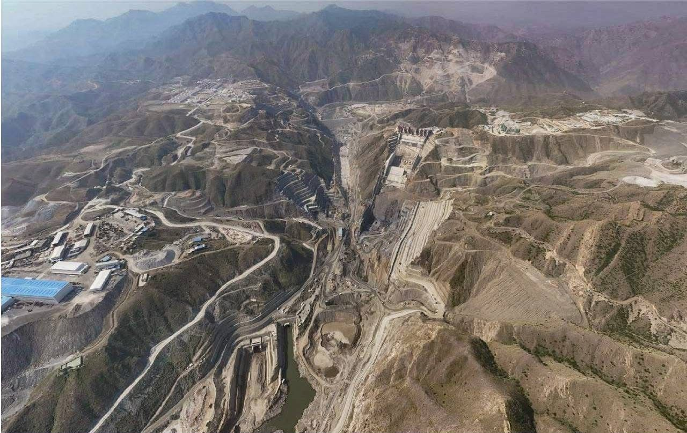
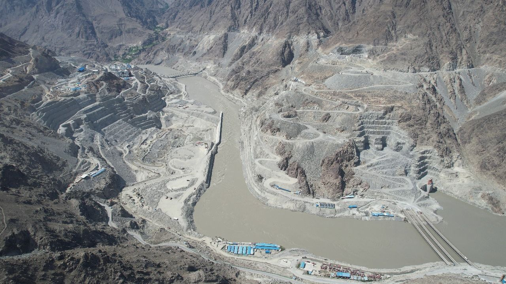
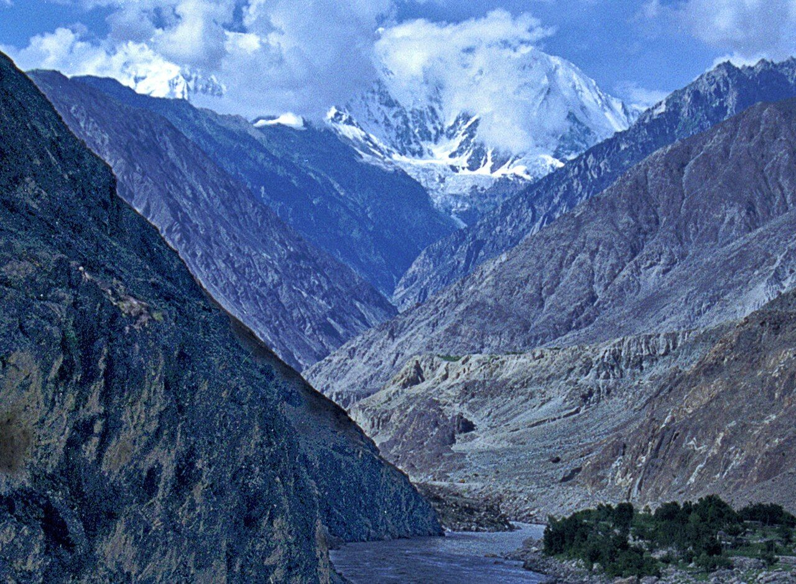

- a work front
- a load of material
- a crew
- a machine
- a crew
The world’s oldest industry has never had an operating system.
DiPGOS is one: one connected system from the first tender document to the last pour.
Every crew, machine and load on a site like this, in one system.
Megaprojects don’t fail in the plan. They fail between the plan and the site.
The estimate lives in one file, the schedule in another, the site reports in a third. By the time a deviation reaches the monthly report, the money is already spent.


One system, from the first page of the tender to the last pour.
- 1
Read the tender
Upload the package. DiPGOS extracts the synopsis, client, value, dates and bid bond.
- 2
Understand the requirements
Requirements are extracted for six disciplines and mapped to the project’s areas. Engineers approve them; nothing goes forward unchecked.
- 3
Build the proposal
Requirements become deliverables, deliverables become operations, and operations get their crews, equipment and materials.
- 4
Export the bid
The budget sheet comes out in Excel and the proposal in Word, with the proposal manager’s commercial buffers applied.
- 5
Book real resources
Once the work is won, planned resource types become real, booked people, machines and materials.
- 6
Control construction
Every project, from the portfolio down to a single operation, on a live map.

See every project, down to a single concrete pour, on one live map.
One place for where the work stands, what it’s made of and how it’s performing. Start at the portfolio map, then drill down to one operation.
Built for the hardest builds.
Dams and hydropower come first. DiPGOS is purpose-built for RCC dam construction, with lift-by-lift progress, a dam breakdown structure, and cure and temperature checks.
It also runs buildings and urban work, from contract to scope to activity, and industrial EPC tenders across piping, process and I&C.

We lived the problem before we built the answer.
Indus is built by engineers and builders who spent their careers inside real projects. We’re not software people guessing at the industry. We’re industry people building the system we always needed.
M. Kamran Basit, Founder & CEO
Let’s shape the future of how the world gets built.
Bring one past tender and we’ll show you what DiPGOS extracts from it.
A pilot runs like this: you bring one real tender, we set up your project, your team works in it for four to eight weeks, you rate and confirm its answers, and we review the results together.